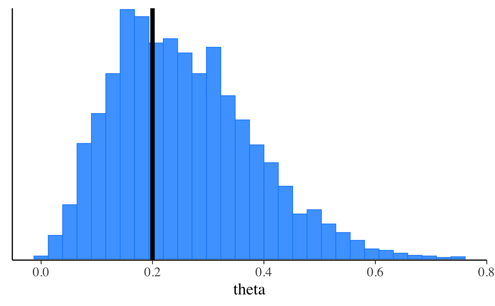

Getting started with CmdStanR
Jonah Gabry and Rok Češnovar
Source:vignettes/cmdstanr.Rmd
cmdstanr.RmdIntroduction
CmdStanR (Command Stan R) is a lightweight interface to Stan for R users that provides an alternative to the traditional RStan interface. See the Comparison with RStan section later in this vignette for more details on how the two interfaces differ.
CmdStanR is not on CRAN yet, but the beta release can be installed by running the following command in R.
# we recommend running this is a fresh R session or restarting your current session
install.packages("cmdstanr", repos = c("https://mc-stan.org/r-packages/", getOption("repos")))CmdStanR (the cmdstanr R package) can now be loaded like any other R package. We’ll also load the bayesplot and posterior packages to use later in examples.
Installing CmdStan
CmdStanR requires a working installation of CmdStan, the shell interface to Stan. If you don’t have CmdStan installed then CmdStanR can install it for you, assuming you have a suitable C++ toolchain. The requirements are described in the CmdStan Guide:
To double check that your toolchain is set up properly you can call
the check_cmdstan_toolchain() function:
The C++ toolchain required for CmdStan is setup properly!If your toolchain is configured correctly then CmdStan can be
installed by calling the install_cmdstan()
function:
install_cmdstan(cores = 2)Before CmdStanR can be used it needs to know where the CmdStan installation is located. When the package is loaded it tries to help automate this to avoid having to manually set the path every session:
If the environment variable
"CMDSTAN"exists at load time then its value will be automatically set as the default path to CmdStan for the R session. This is useful if your CmdStan installation is not located in the default directory that would have been used byinstall_cmdstan()(see #2).If no environment variable is found when loaded but any directory in the form
".cmdstan/cmdstan-[version]", for example".cmdstan/cmdstan-2.23.0", exists in the user’s home directory (Sys.getenv("HOME"), not the current working directory) then the path to the CmdStan with the largest version number will be set as the path to CmdStan for the R session. This is the same as the default directory thatinstall_cmdstan()uses to install the latest version of CmdStan, so if that’s how you installed CmdStan you shouldn’t need to manually set the path to CmdStan when loading CmdStanR.
If neither of these applies (or you want to subsequently change the
path) you can use the set_cmdstan_path() function:
set_cmdstan_path(PATH_TO_CMDSTAN)To check the path to the CmdStan installation and the CmdStan version
number you can use cmdstan_path() and
cmdstan_version():
[1] "/Users/jgabry/.cmdstan/cmdstan-2.32.2"[1] "2.32.2"Compiling a model
The cmdstan_model() function creates a new CmdStanModel
object from a file containing a Stan program. Under the hood, CmdStan is
called to translate a Stan program to C++ and create a compiled
executable. Here we’ll use the example Stan program that comes with the
CmdStan installation:
file <- file.path(cmdstan_path(), "examples", "bernoulli", "bernoulli.stan")
mod <- cmdstan_model(file)The object mod is an R6 reference object of class CmdStanModel
and behaves similarly to R’s reference class objects and those in object
oriented programming languages. Methods are accessed using the
$ operator. This design choice allows for CmdStanR and CmdStanPy to provide a
similar user experience and share many implementation details.
The Stan program can be printed using the $print()
method:
mod$print()data {
int<lower=0> N;
array[N] int<lower=0,upper=1> y;
}
parameters {
real<lower=0,upper=1> theta;
}
model {
theta ~ beta(1,1); // uniform prior on interval 0,1
y ~ bernoulli(theta);
}The path to the compiled executable is returned by the
$exe_file() method:
mod$exe_file()[1] "/Users/jgabry/.cmdstan/cmdstan-2.32.2/examples/bernoulli/bernoulli"Running MCMC
The $sample()
method for CmdStanModel
objects runs Stan’s default MCMC algorithm. The data
argument accepts a named list of R objects (like for RStan) or a path to
a data file compatible with CmdStan (JSON or R dump).
# names correspond to the data block in the Stan program
data_list <- list(N = 10, y = c(0,1,0,0,0,0,0,0,0,1))
fit <- mod$sample(
data = data_list,
seed = 123,
chains = 4,
parallel_chains = 4,
refresh = 500 # print update every 500 iters
)Running MCMC with 4 parallel chains...
Chain 1 Iteration: 1 / 2000 [ 0%] (Warmup)
Chain 1 Iteration: 500 / 2000 [ 25%] (Warmup)
Chain 1 Iteration: 1000 / 2000 [ 50%] (Warmup)
Chain 1 Iteration: 1001 / 2000 [ 50%] (Sampling)
Chain 1 Iteration: 1500 / 2000 [ 75%] (Sampling)
Chain 1 Iteration: 2000 / 2000 [100%] (Sampling)
Chain 2 Iteration: 1 / 2000 [ 0%] (Warmup)
Chain 2 Iteration: 500 / 2000 [ 25%] (Warmup)
Chain 2 Iteration: 1000 / 2000 [ 50%] (Warmup)
Chain 2 Iteration: 1001 / 2000 [ 50%] (Sampling)
Chain 2 Iteration: 1500 / 2000 [ 75%] (Sampling)
Chain 2 Iteration: 2000 / 2000 [100%] (Sampling)
Chain 3 Iteration: 1 / 2000 [ 0%] (Warmup)
Chain 3 Iteration: 500 / 2000 [ 25%] (Warmup)
Chain 3 Iteration: 1000 / 2000 [ 50%] (Warmup)
Chain 3 Iteration: 1001 / 2000 [ 50%] (Sampling)
Chain 3 Iteration: 1500 / 2000 [ 75%] (Sampling)
Chain 3 Iteration: 2000 / 2000 [100%] (Sampling)
Chain 4 Iteration: 1 / 2000 [ 0%] (Warmup)
Chain 4 Iteration: 500 / 2000 [ 25%] (Warmup)
Chain 4 Iteration: 1000 / 2000 [ 50%] (Warmup)
Chain 4 Iteration: 1001 / 2000 [ 50%] (Sampling)
Chain 4 Iteration: 1500 / 2000 [ 75%] (Sampling)
Chain 4 Iteration: 2000 / 2000 [100%] (Sampling)
Chain 1 finished in 0.0 seconds.
Chain 2 finished in 0.0 seconds.
Chain 3 finished in 0.0 seconds.
Chain 4 finished in 0.0 seconds.
All 4 chains finished successfully.
Mean chain execution time: 0.0 seconds.
Total execution time: 0.4 seconds.There are many more arguments that can be passed to the
$sample() method. For details follow this link to its
separate documentation page:
The $sample() method creates R6 CmdStanMCMC objects,
which have many associated methods. Below we will demonstrate some of
the most important methods. For a full list, follow this link to the
CmdStanMCMC documentation:
Posterior summary statistics
Summaries from the posterior package
The $summary()
method calls summarise_draws() from the
posterior package. The first argument specifies the
variables to summarize and any arguments after that are passed on to
posterior::summarise_draws() to specify which summaries to
compute, whether to use multiple cores, etc.
fit$summary()
fit$summary(variables = c("theta", "lp__"), "mean", "sd")
# use a formula to summarize arbitrary functions, e.g. Pr(theta <= 0.5)
fit$summary("theta", pr_lt_half = ~ mean(. <= 0.5))
# summarise all variables with default and additional summary measures
fit$summary(
variables = NULL,
posterior::default_summary_measures(),
extra_quantiles = ~posterior::quantile2(., probs = c(.0275, .975))
) variable mean median sd mad q5 q95 rhat ess_bulk ess_tail
1 lp__ -7.27 -7.00 0.71 0.34 -8.70 -6.75 1 1852 2114
2 theta 0.25 0.23 0.12 0.12 0.08 0.47 1 1611 1678 variable mean sd
1 theta 0.25 0.12
2 lp__ -7.27 0.71 variable pr_lt_half
1 theta 0.97 variable mean median sd mad q5 q95 q2.75 q97.5
1 lp__ -7.27 -7.00 0.71 0.34 -8.70 -6.75 -9.165 -6.75
2 theta 0.25 0.23 0.12 0.12 0.08 0.47 0.065 0.52Posterior draws
Extracting draws
The $draws()
method can be used to extract the posterior draws in formats provided by
the posterior
package. Here we demonstrate only the draws_array and
draws_df formats, but the posterior
package supports other useful formats as well.
# default is a 3-D draws_array object from the posterior package
# iterations x chains x variables
draws_arr <- fit$draws() # or format="array"
str(draws_arr) 'draws_array' num [1:1000, 1:4, 1:2] -6.78 -6.9 -7.05 -6.85 -6.75 ...
- attr(*, "dimnames")=List of 3
..$ iteration: chr [1:1000] "1" "2" "3" "4" ...
..$ chain : chr [1:4] "1" "2" "3" "4"
..$ variable : chr [1:2] "lp__" "theta"
# draws x variables data frame
draws_df <- fit$draws(format = "df")
str(draws_df)draws_df [4,000 × 5] (S3: draws_df/draws/tbl_df/tbl/data.frame)
$ lp__ : num [1:4000] -6.78 -6.9 -7.05 -6.85 -6.75 ...
$ theta : num [1:4000] 0.284 0.186 0.162 0.196 0.252 ...
$ .chain : int [1:4000] 1 1 1 1 1 1 1 1 1 1 ...
$ .iteration: int [1:4000] 1 2 3 4 5 6 7 8 9 10 ...
$ .draw : int [1:4000] 1 2 3 4 5 6 7 8 9 10 ...
print(draws_df)# A draws_df: 1000 iterations, 4 chains, and 2 variables
lp__ theta
1 -6.8 0.28
2 -6.9 0.19
3 -7.0 0.16
4 -6.9 0.20
5 -6.7 0.25
6 -7.1 0.36
7 -9.0 0.55
8 -7.2 0.15
9 -6.8 0.23
10 -7.5 0.42
# ... with 3990 more draws
# ... hidden reserved variables {'.chain', '.iteration', '.draw'}To convert an existing draws object to a different format use the
posterior::as_draws_*() functions.
# this should be identical to draws_df created via draws(format = "df")
draws_df_2 <- as_draws_df(draws_arr)
identical(draws_df, draws_df_2)[1] TRUEIn general, converting to a different draws format in this way will
be slower than just setting the appropriate format initially in the call
to the $draws() method, but in most cases the speed
difference will be minor.
Sampler diagnostics
Extracting diagnostic values for each iteration and chain
The $sampler_diagnostics()
method extracts the values of the sampler parameters
(treedepth__, divergent__, etc.) in formats
supported by the posterior package. The default is as a
3-D array (iteration x chain x variable).
# this is a draws_array object from the posterior package
str(fit$sampler_diagnostics()) 'draws_array' num [1:1000, 1:4, 1:6] 1 2 2 2 2 1 1 1 1 2 ...
- attr(*, "dimnames")=List of 3
..$ iteration: chr [1:1000] "1" "2" "3" "4" ...
..$ chain : chr [1:4] "1" "2" "3" "4"
..$ variable : chr [1:6] "treedepth__" "divergent__" "energy__" "accept_stat__" ...
# this is a draws_df object from the posterior package
str(fit$sampler_diagnostics(format = "df"))draws_df [4,000 × 9] (S3: draws_df/draws/tbl_df/tbl/data.frame)
$ treedepth__ : num [1:4000] 1 2 2 2 2 1 1 1 1 2 ...
$ divergent__ : num [1:4000] 0 0 0 0 0 0 0 0 0 0 ...
$ energy__ : num [1:4000] 6.79 6.9 7.06 7 7.9 ...
$ accept_stat__: num [1:4000] 0.996 0.984 0.988 1 0.835 ...
$ stepsize__ : num [1:4000] 1.03 1.03 1.03 1.03 1.03 ...
$ n_leapfrog__ : num [1:4000] 1 3 3 3 3 3 1 3 3 3 ...
$ .chain : int [1:4000] 1 1 1 1 1 1 1 1 1 1 ...
$ .iteration : int [1:4000] 1 2 3 4 5 6 7 8 9 10 ...
$ .draw : int [1:4000] 1 2 3 4 5 6 7 8 9 10 ...Sampler diagnostic warnings and summaries
The $diagnostic_summary() method will display any
sampler diagnostic warnings and return a summary of diagnostics for each
chain.
fit$diagnostic_summary()$num_divergent
[1] 0 0 0 0
$num_max_treedepth
[1] 0 0 0 0
$ebfmi
[1] 1.0 1.3 1.1 1.2We see the number of divergences for each of the four chains, the number of times the maximum treedepth was hit for each chain, and the E-BFMI for each chain.
In this case there were no warnings, so in order to demonstrate the warning messages we’ll use one of the CmdStanR example models that suffers from divergences.
fit_with_warning <- cmdstanr_example("schools")Warning: 185 of 4000 (5.0%) transitions ended with a divergence.
See https://mc-stan.org/misc/warnings for details.After fitting there is a warning about divergences. We can also
regenerate this warning message later using
fit$diagnostic_summary().
diagnostics <- fit_with_warning$diagnostic_summary()Warning: 185 of 4000 (5.0%) transitions ended with a divergence.
See https://mc-stan.org/misc/warnings for details.
print(diagnostics)$num_divergent
[1] 8 120 17 40
$num_max_treedepth
[1] 0 0 0 0
$ebfmi
[1] 0.29 0.24 0.26 0.30
# number of divergences reported in warning is the sum of the per chain values
sum(diagnostics$num_divergent)[1] 185Create a stanfit object
If you have RStan installed then it is also possible to create a
stanfit object from the csv output files written by
CmdStan. This can be done by using rstan::read_stan_csv()
in combination with the $output_files() method of the
CmdStanMCMC object. This is only needed if you want to fit
a model with CmdStanR but already have a lot of post-processing code
that assumes a stanfit object. Otherwise we recommend using
the post-processing functionality provided by CmdStanR itself.
stanfit <- rstan::read_stan_csv(fit$output_files())Running optimization and variational inference
CmdStanR also supports running Stan’s optimization algorithms and its
algorithms for variational approximation of full Bayesian inference.
These are run via the $optimize() and
$variational() methods, which are called in a similar way
to the $sample() method demonstrated above.
Optimization
We can find the (penalized) maximum likelihood estimate (MLE) using
$optimize().
fit_mle <- mod$optimize(data = data_list, seed = 123)
fit_mle$summary() # includes lp__ (log prob calculated by Stan program)
fit_mle$mle("theta")Initial log joint probability = -9.51104
Iter log prob ||dx|| ||grad|| alpha alpha0 # evals Notes
6 -5.00402 0.000103557 2.55661e-07 1 1 9
Optimization terminated normally:
Convergence detected: relative gradient magnitude is below tolerance
Finished in 0.2 seconds. variable estimate
1 lp__ -5.0
2 theta 0.2theta
0.2 Here’s a plot comparing the penalized MLE to the posterior
distribution of theta.

Variational Bayes
We can run Stan’s experimental variational Bayes algorithm (ADVI)
using the $variational()
method.
fit_vb <- mod$variational(data = data_list, seed = 123, output_samples = 4000)
fit_vb$summary("theta")------------------------------------------------------------
EXPERIMENTAL ALGORITHM:
This procedure has not been thoroughly tested and may be unstable
or buggy. The interface is subject to change.
------------------------------------------------------------
Gradient evaluation took 6e-06 seconds
1000 transitions using 10 leapfrog steps per transition would take 0.06 seconds.
Adjust your expectations accordingly!
Begin eta adaptation.
Iteration: 1 / 250 [ 0%] (Adaptation)
Iteration: 50 / 250 [ 20%] (Adaptation)
Iteration: 100 / 250 [ 40%] (Adaptation)
Iteration: 150 / 250 [ 60%] (Adaptation)
Iteration: 200 / 250 [ 80%] (Adaptation)
Success! Found best value [eta = 1] earlier than expected.
Begin stochastic gradient ascent.
iter ELBO delta_ELBO_mean delta_ELBO_med notes
100 -6.262 1.000 1.000
200 -6.263 0.500 1.000
300 -6.307 0.336 0.007 MEDIAN ELBO CONVERGED
Drawing a sample of size 4000 from the approximate posterior...
COMPLETED.
Finished in 0.1 seconds. variable mean median sd mad q5 q95
1 theta 0.27 0.25 0.12 0.12 0.1 0.49The $draws() method can be used to access the
approximate posterior draws. Let’s extract the draws, make the same plot
we made after MCMC, and compare the two. In this trivial example the
distributions look quite similar, although the variational approximation
slightly underestimates the posterior standard deviation.
mcmc_hist(fit$draws("theta"), binwidth = 0.025)
Posterior from MCMC
mcmc_hist(fit_vb$draws("theta"), binwidth = 0.025)
Posterior from variational
For more details on the $optimize() and
$variational() methods, follow these links to their
documentation pages.
Saving fitted model objects
In order to save a fitted model object to disk and ensure that all of
the contents are available when reading the object back into R, we
recommend using the $save_object()
method provided by CmdStanR. The reason for this is discussed in detail
in the vignette How
does CmdStanR work?, so here we just demonstrate how to use the
method.
fit$save_object(file = "fit.RDS")
# can be read back in using readRDS
fit2 <- readRDS("fit.RDS")Comparison with RStan
Different ways of interfacing with Stan’s C++
The RStan interface (rstan package) is an in-memory interface to Stan and relies on R packages like Rcpp and inline to call C++ code from R. On the other hand, the CmdStanR interface does not directly call any C++ code from R, instead relying on the CmdStan interface behind the scenes for compilation, running algorithms, and writing results to output files.
Advantages of RStan
Allows other developers to distribute R packages with pre-compiled Stan programs (like rstanarm) on CRAN.
Avoids use of R6 classes, which may result in more familiar syntax for many R users.
Advantages of CmdStanR
Compatible with latest versions of Stan. Keeping up with Stan releases is complicated for RStan, often requiring non-trivial changes to the rstan package and new CRAN releases of both rstan and StanHeaders. With CmdStanR the latest improvements in Stan will be available from R immediately after updating CmdStan using
cmdstanr::install_cmdstan().Running Stan via external processes results in fewer unexpected crashes, especially in RStudio.
Less memory overhead.
More permissive license. RStan uses the GPL-3 license while the license for CmdStanR is BSD-3, which is a bit more permissive and is the same license used for CmdStan and the Stan C++ source code.
Additional resources
There are additional vignettes available that discuss other aspects of using CmdStanR. These can be found online at the CmdStanR website:
To ask a question please post on the Stan forums:
To report a bug, suggest a feature (including additions to these vignettes), or to start contributing to CmdStanR development (new contributors welcome!) please open an issue on GitHub: